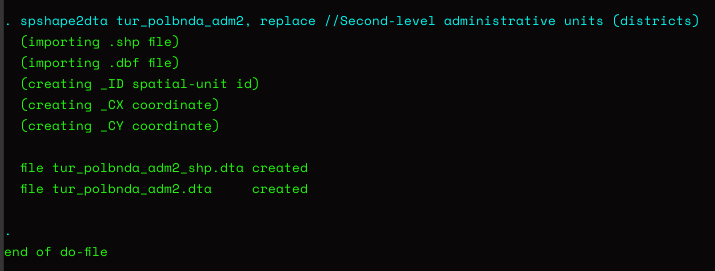
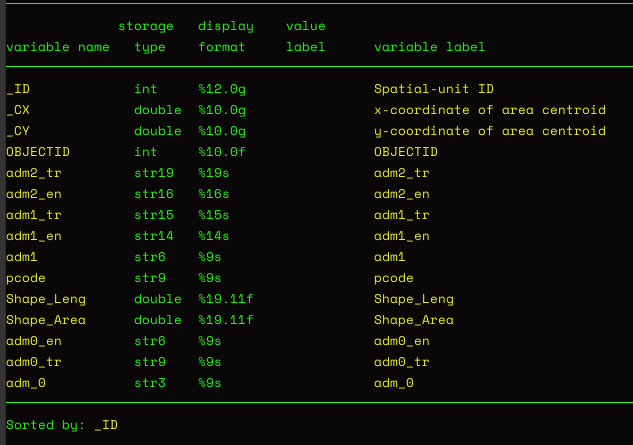
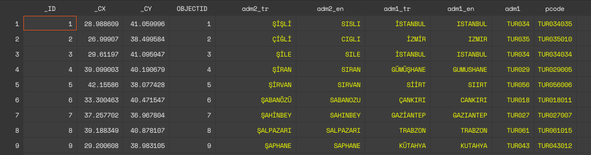
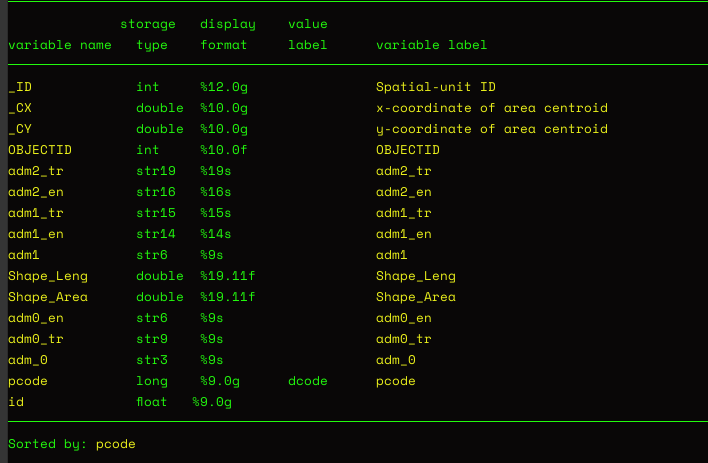
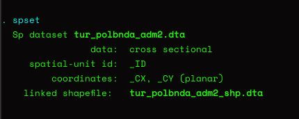
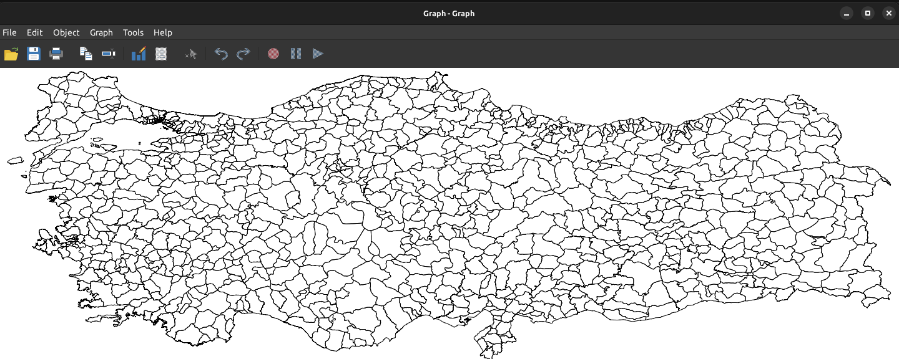
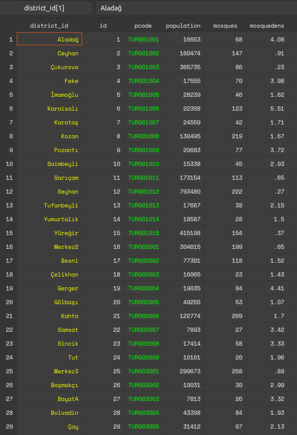
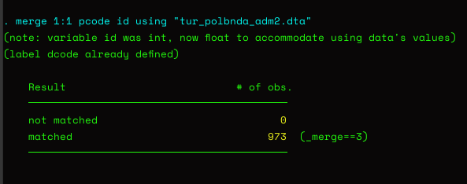
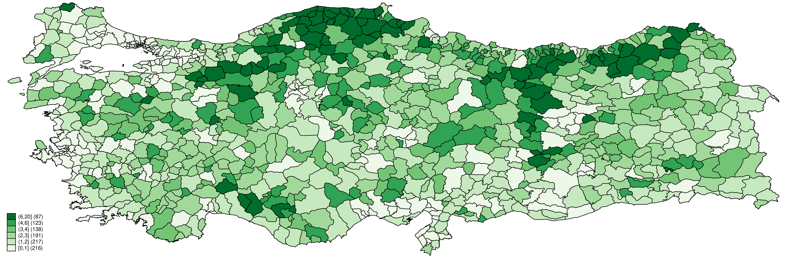

Practical Introduction to Mapping with Stata
This is a relatively short, practical introduction to mapping with Stata designed to get the newcomer started in no time and provide a quick refresher as needed.
In this tutorial1, we will draw a choropleth map (assigning various colors to levels of a variable to show intensity) of mosque density in Turkey at the district level.2 In this first step of spatial analysis, we need two separate things: A map with the required boundaries marking the units we are interested in, and substantive data corresponding to the geographical units marked by the borders in the map. The map files are freely available on the internet, and the one we will use can be obtained from Shapefiles. We will need the turkey_administrativelevels0_1_2.zip file. This zip file contains the administrative boundaries for the country, provinces, and districts. In this tutorial, we are creating a map at the district level and this is the second level. After unzipping the file, extract the following files to a folder of your choice:3
- tur_polbnda_adm2.cpg
- tur_polbnda_adm2.dbf
- tur_polbnda_adm2.prj
- tur_polbnda_adm2.sbn
- tur_polbnda_adm2.sbx
- tur_polbnda_adm2.shp
- tur_polbnda_adm2.shp.xml
- tur_polbnda_adm2.shx
Now that we have our shapefile in folder, we will need to generate / get our substantive data for the variable that we want to map.4 For this tutorial, grab the substantive dataset and place it in the same folder as with the shapefiles.5
Before we get down to it, two words of advice: First, it is important to realize these types of detailed maps do not show causation per se (Healy 2018, 182).6 Second, I intentionally did not provide a .do file so that the reader will type the commands themselves, and generate their own .do files with the comments that they think will be useful in the future. This — I have been led to believe — is a best practice in learning.
Let us start typing those commands!
1. Preliminaries
First order of business, as usual, is to check where in the file system we are. Using the following command, check the current working directory and point Stata to the folder of our files by Shift+Control+F.
pwdNow that we are where we want to be in the file system, we will use Stata’s built-in spatial commands. First, issue the following command to have Stata use all the shapefiles in our folder to generate a .dta dataset that we can manipulate using Stata.
spshape2dta tur_polbnda_adm2, replaceWe will see the following output on the console, confirming that Stata used all the shapefiles to create a .dta file that we can manipulate.

Let us load this dataset and have a look at it.
use "tur_polbnda_adm2.dta", clear
describe
Looking at the generated dataset, there are two important variables. These are the _ID and pcode variables. The main logic here is to be able to have a unique identifier for each geographic unit. A note from this dataset is that even though _ID variable starts from 1 and increases the corresponding pcode variable does not start with the first district (alphabetical or the first province). This is an important concern, so we will do some data cleaning to make sure that the first district has an id of 1 and corresponds to TUR001001.

pcode variable is string, so we can not do any manipulation, so with the following code we first encode it and then based on the code we sort the dataset. In order to have a second variable to use in uniquely identifying each unit, we also generate a new id variable starting from 1. We want to have an ordered dataset with two unique identifiers for each geographical unit.
encode pcode, generate(dcode)
drop pcode
rename dcode pcode
sort pcode
gen id = _nLet us check our work.
describe
We have our id variable and pcode variable is not string anymore. All looks good, so we can save our map dataset:
save "tur_polbnda_adm2.dta", replaceJust like we define a time-series dataset to Stata using the tsset command, while our dataset is in memory, we define it as a spatial dataset with the following command:
spset
In order to check if this definition is successful, we use Stata’s built-in grmap command to see if Stata can draw the borders in this dataset. This is the spatial dataset and will include only the borders.
grmap
This confirms that our map data is properly defined as we see the borders of districts drawn. Next order of business is the coordinate system. In the console output above we see that the coordinate system is planar, so we are modifying it with the following command:
spset, modify coordsys(latlong, kilometers)Our preliminary work is done. We prepared our map dataset to be used in the analysis. Now we need to merge the datasets in such a way that the new dataset will now not only have borders (spatial information) but also values of our variable of interest (here mosque density) corresponding to each of those units. So, it will be possible to create a choropleth map. We save our dataset before proceeding.
save "tur_polbnda_adm2.dta", replace2. Merging Datasets
Let us load our substantive dataset of this tutorial and have a look at it.
use "abus_mosque_density.dta", clear
describeA look at the first few lines of the dataset show that each district has an id variable starting from 1 and the counting starts from the very first district of the first province (pcode starts from “TUR001001”). This is the way I prepared this substantive dataset and I suggest using two unique identifiers7 for each observation as a best practice.

We first load our spatial dataset:
use "tur_polbnda_adm2.dta", clearThen we load our master dataset (substantial dataset).
use "abus_mosque_density.dta", clearThe second dataset we load in this workflow is our main dataset. The code below allows us to merge the datasets. In effect, we are adding spatial data to our dataset. We are using our two unique identifiers. This means those observations that are uniquely identified in both datasets become one observation and additional information is added to that observation (here spatial data).
merge 1:1 pcode id using "tur_polbnda_adm2.dta"
The Stata console output shows that there was a match of 973 districts. The benefit of spending time and thinking about identifiers and data cleaning is usually to prevent problems with merging at this stage. In order to keep our data clean of unnecessary variables, we drop the *_merge* variable:
drop _merge3. The Map!
Now we have a dataset that is spset and includes the spatial information of the variable of interest (mosque density). It is now a matter of issuing a grmap command with the variable to be mapped (here mosquedens). grmap has a lot of options that can be checked by:
help grmapBelow, we are using 7 intervals and through the custom option we define the breaking points for these intervals. We are using the Greens color scheme from Brewer and we are including the count as a legend (but without an explanatory text).
grmap mosquedens, clnumber(7) clmethod(custom) ///
clbreaks(0 1 2 3 4 6 20) fcolor(Greens) legcount
We can save our map as a regular Stata .gph file, which is cool.
save "mosquedensity.gph", replaceWe can export it to a number of formats.
graph export "mosquedensity.pdf", replace
graph export "mosquedensity.svg", replaceThanks for reading!8
Footnotes
This fast tutorial was inspired by Cameron Wimpy.↩︎
For a more detailed and formal introduction, please see the multi-part series of Asjad Naqvi.↩︎
Note that for this particular case, the .zip file included files ending with “0”, “1”, and “2”. These correspond to the administrative units of the country. Files with “0” would be used to draw the country borders, files with “1” would be used to draw the province borders and here we are using the files with “2” to draw the district borders. By the same logic, there are separate shapefiles containing information about the railways, waterways, roads, etc.↩︎
This tutorial assumes that the files be placed in a single folder. Beyond that there is no assumption about any particular folder-subfolder structure choice.↩︎
Note that I compiled this dataset to reflect mosque density for each of 973 administrative districts in Turkey.↩︎
Healy, Kieran. 2018. Data Visualization: A Practical Introduction. Princeton University Press.↩︎
Unique identifiers are also referred to as keys.↩︎
Screenshots are from Stata IC 16.1 running on a Linux machine (Ubuntu 22.04 / GNOME 42.1)↩︎